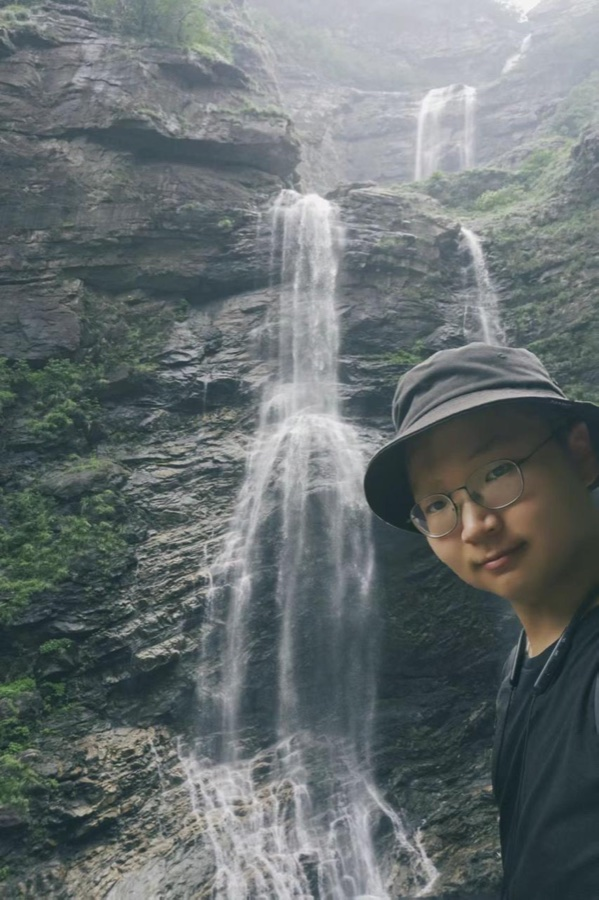

俞阳阳 Yangyang Yu
I recently graduated from Tsinghua University with a B.S. in Information and Computing Sciences. I work on AI agents, embodied and edge AI, multimodal LLM evaluation, long-term memory, and AI products that move from research prototypes to real users. Currently exploring AI4Math architecture for formal mathematical reasoning and proof verification.
我曾在清华大学人工智能研究院参与大模型与具身智能方向研究，是 VidEgoThink 的第三作者；也在 SkinPilot / SkinLM 早期探索、 TechVoyage（汤问致新）、华为灵犀实验室和 AI 志愿填报项目中实践过 Agent 架构、长期记忆、RAG、后端部署、软硬件协同与产品定义。目前探索 AI4Math 架构，研究形式化数学推理与证明验证。
Email / Research / Publications / Thesis / Projects / Experience / Honors

Research Interests
My current research and engineering interests include multimodal large language models, egocentric video understanding for embodied AI, edge-optimized agents, memory-augmented reasoning, efficient fine-tuning, and human-facing AI systems. I also work on formal verification of mathematical theories, continuing Teichmüller's unified program through Lean 4 formalization and multi-agent collaborative exploration.
Selected Publications
VidEgoThink: Assessing Egocentric Video Understanding Capabilities for Embodied AI
arXiv preprint, 2024. Third author.
A benchmark and evaluation study for assessing egocentric video understanding capabilities in embodied AI settings.
Undergraduate Thesis
RL-G-Memory: Cold-start & Adaptive Optimization of Multi-Agent Memory via Reinforcement Learning
Studied memory control for multi-agent systems through a two-stage framework that combines supervised cold-start training with staged GRPO optimization. Evaluated on FEVER, HotpotQA, and SciWorld, the work focuses on when agents should retrieve memory rather than simply retrieving more.
Projects
AI4Math: Formal Mathematical Reasoning
Teichmüller's Unified Program
Continuing Oswald Teichmüller's 1944 unified program for variable Riemann surfaces. Combines LaTeX tutorials, Lean 4 formalization, and collaborative AI agent exploration with rigorous review. Restores the Göttingen school's legacy in complex geometry, topology, and moduli theory.
ProofWeave
A verifiable network for personally delegated formal mathematics research. Enables distributed collaborative theorem proving with cryptographic verification of research contributions and proof chains.
Other Projects
SkinPilot / SkinLM 个性化护肤 Agent（早期项目）
Explore algorithm prototypes for a personalized skincare agent with intent routing, dual-layer memory, multi-source data fusion, and privacy-aware longitudinal skin data management. The project also studies how smart-mirror image capture and user feedback can support low-friction skincare decisions.
TechVoyage（汤问致新）角色化 AI Agent 与陪伴机器人系统
Lead the technical roadmap for character-based AI agents and companion robot products. Built virtual-human systems with long-term memory, emotional simulation, personalized conversation, prompt engineering, vector database integration, and backend deployment. Secured MiraclePlus seed funding and iterated MVP prototypes through user testing.
简单志愿 AI 志愿填报助手
Designed and developed an AI-powered college application recommendation system for Chinese Gaokao students. The system combined scores, preferences, university policies, and interactive consultation. The internal beta attracted 1000+ students and parents during the 2025 application season.
大模型 Agent 与高效微调研究
Worked as an undergraduate research assistant on LLM agents, context length extension, efficient fine-tuning, and memory mechanisms. Contributed to experiment implementation, data organization, ablation analysis, and paper writing for projects including VidEgoThink.
Experience
Shenzhen Institute of Innovation and Entrepreneurship
Studied consumer product logic, user research, pain-point discovery, product design, and team collaboration.
Huawei Linxi Lab
Worked on multimodal LLM application development and optimized knowledge extraction pipelines for unstructured instructional data. Integrated RAG-style context retrieval and collaborated on enterprise AI deployment workflows.
Course Research Committee, Department of Computer Science, Tsinghua University
Participated in curriculum reform research for 10+ CS courses. Designed questionnaires, interviewed students, analyzed feedback with Python, and contributed to curriculum optimization proposals adopted by the department.
Activities
Tsinghua University Overseas Practice Program, Chile
Conducted field research on indigenous cultural preservation and environmental sustainability. Worked with local organizations through interviews, participatory workshops, and policy-report writing.
Selected Honors
National Silver Award, China International College Students' Innovation Competition
Awarded for IntelliCompanion, a multimodal desktop companion robot project. Led cloud-edge AI architecture and prototype iterations.
Zheng Gang Overseas Practice Scholarship
Recognized overseas field research and cross-cultural practice work in Chile.
Education
Tsinghua University
Coursework includes mathematical analysis, linear algebra, probability, discrete mathematics, mathematical programming, data structures, operating systems, computer networks, object-oriented programming, and artificial neural networks.
Contact
For discussions about AI agents, embodied AI, LLM applications, product building, or engineering projects, feel free to email me at yu-yy21@qq.com.